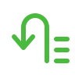
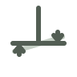

Ayuda
Encender y arrancar
PilotX arranca solo con la pantalla. Si lo cerraste, abrilo desde el ícono del escritorio: levanta también el motor de guiado, no hace falta abrir nada más.
Antes de trabajar, mirá arriba a la izquierda: el punto de GPS tiene que estar en verde. Si dice SIN FIX o está en rojo, la antena todavía no tiene señal — esperá a cielo abierto unos segundos.
Partes de la pantalla
Barra de arriba
Velocidad, señal de GPS, tiempo y hectáreas. Los botones: TRABAJO, GPS, el nombre del lote (abre sus datos) y SISTEMA (perfiles del vehículo y esta ayuda).
Menú de la izquierda
Se despliega con la flecha del borde:
Barra de la pasada (abajo)
Es la que más se usa. Está ordenada por zonas: a la izquierda lo que definís antes de arrancar, al centro la corrección, y a la derecha lo que tocás todo el tiempo.

Barra de la derecha
Funciones de la pasada. Se pliega sola y se abre con su lengüeta.

Zoom
Los botones + y − están fijos arriba a la derecha. También podés acercar con dos dedos sobre el mapa.
Qué ves en el mapa
- Punto celeste — la antena GPS, sobre el tractor.
- Punto naranja — hacia dónde apunta el piloto. Si va sobre la línea, el guiado trabaja bien.
- Verde — lo ya trabajado (el pintado).
Una jornada, paso a paso
- Esperar el GPS en verde.
- Abrir el lote (o crearlo si es la primera vez).
- Elegir o crear la guía por donde vas a sembrar.
- Si hace falta, marcar el lindero y construir la cabecera.
- Poner las secciones en Automático.
- Enganchar el Piloto y trabajar.
- Al terminar: cerrar el lote (guarda todo y lo manda a la nube si está configurada).
Lote
Menú izquierdo › LOTE
- Continuar — vuelve al último lote trabajado.
- Abrir — lista de lotes guardados.
- Nuevo — crea uno en la posición actual.
- Borrar pintado — borra lo trabajado (lo verde del mapa) sin borrar el lote.
- Cerrar — termina la jornada y guarda.
Para ver hectáreas, distancia y datos del lote abierto, tocá el nombre del lote en la barra de arriba.
Guías
Barra de la pasada › Guías
Al abrir aparecen dos opciones para crear, y si el lote ya tiene guías, un botón para verlas:
AB Line (recta)
- Poné el tractor donde empieza la pasada y tocá A.
- Manejá derecho hasta el otro extremo y tocá B.
- Confirmá con el tilde verde y ponele nombre. La ventana se cierra sola y la guía queda en el mapa.
AB + Curva
Igual, pero grabando el recorrido: tocá A, manejá la curva como querés que quede, y confirmá. Sirve para lotes con contornos irregulares.
Guías guardadas
Lista de las guías del lote. Tocá una y confirmá con el tilde verde para usarla. Desde ahí también podés borrarlas, renombrarlas, duplicarlas, invertir A↔B y ordenarlas.
Corregir la línea
Barra de la pasada › Izq Centrar Der
Si la guía quedó corrida respecto de lo sembrado: Izq y Der la mueven de a poco, y Centrar la lleva justo debajo del tractor.
Para pasar de una guía a otra durante el trabajo usá Guía sig. / Guía ant. de la barra derecha.
Contorno: guiado sin línea fija
Barra derecha › Contorno
Las guías AB y curva son líneas fijas: se dibujan una vez y el piloto arma las pasadas paralelas a esa. Contorno es distinto: no hay línea guardada — el piloto se pega a la última pasada que hiciste, tomándola de lo que quedó pintado en el mapa.
Sirve para lotes de forma irregular, donde ninguna recta ni curva sirve para todo: bordeás una vez siguiendo el alambrado a mano, y de ahí en más el piloto va siguiendo esa forma vuelta tras vuelta, cerrándose hacia adentro.
- Para usarlo: sembrá una vuelta con las secciones prendidas (así queda pintado) y después activá Contorno. El piloto engancha solo, sin elegir guía.
- Fijar cont. (botón de al lado) clava la referencia a la pasada actual, para que no salte a otra cercana.
- Si no hay nada pintado alrededor, Contorno no tiene de dónde agarrarse y no engancha.
Lindero y cabecera
Lindero (contorno del lote)
Barra de la pasada › Lindero
Se graba manejando el perímetro: tocá Crear manejando, dale Grabar y recorré el borde. Podés pausar, agregar un punto suelto y deshacer. Al final, Terminar.
En Ajustes de esa pantalla podés grabar con un offset (por ejemplo media máquina) y elegir de qué lado.
Cabecera
Barra de la pasada › Cabecera
La cabecera es la franja del borde donde el tractor da la vuelta. Se construye hacia adentro del lindero:
- Poné la distancia (viene cargada con el ancho de la máquina).
- Tocá Construir: la vas a ver dibujada en el mapa.
- Reset al contorno la vuelve al borde; Apagar cabecera la desactiva sin borrarla.
Con Secciones controladas en cabecera tildado, la máquina corta sola al entrar en esa franja.
Piloto automático
Barra de la pasada › Piloto (a la derecha del todo)
Para que enganche hacen falta tres cosas:
- GPS con señal,
- lote abierto,
- una guía elegida (o contorno activo).
Si falta alguna, el botón queda gris. Al enganchar, el tractor busca la línea y se acomoda solo; en el mapa vas a ver el punto naranja tirando hacia la guía.
Para desenganchar, tocá Piloto de nuevo. Mover el volante también corta el guiado: es la salida de emergencia de siempre.
Giro en la cabecera
Con Giro activado, al llegar a la cabecera el tractor da la vuelta solo y engancha la pasada siguiente. Necesita guía y cabecera hechas. Para saltear pasadas usá Por medio en la barra derecha.
Secciones y pintado
Barra de la pasada › Automático / Manual
- Automático — la máquina abre y cierra sola: corta en lo ya sembrado, en la cabecera y fuera del lindero.
- Manual — quedan todas abiertas hasta que las apagues.
Arriba de la barra hay una fila con cada sección, para abrir o cerrar de a una (por ejemplo levantar un cuerpo en una punta).
Anti-solape
PilotX no vuelve a sembrar lo ya sembrado: al pisar una pasada anterior, esas secciones cortan solas. Viene activado.
Lo trabajado se pinta de verde en el mapa. Para limpiarlo: LOTE › Borrar pintado.
Configuración
Menú izquierdo › Configuración
Todo lo del equipo vive acá, agrupado en el menú de la izquierda de esa pantalla:
| Grupo | Para qué |
|---|---|
| Vehículo | Tipo y marca, dimensiones (distancia entre ejes, trocha) y posición de la antena. |
| Implemento | Enganche, distancias, offset lateral, pivote y tiempos de encendido/apagado. |
| Secciones | Cuántas hay y qué ancho tiene cada una, switches y máquina. |
| GPS / IMU | De dónde sale el rumbo y corrección de rolido. |
| Otros | Giro en cabecera (U-Turn), huellas (Tram) y sonidos. |
La configuración de la dirección (cómo responde el volante) está aparte: Menú izquierdo › Dirección. Los perfiles del vehículo se guardan y se cambian desde SISTEMA › Perfiles del vehículo.
Nodos y productos X
Configuración › Módulos
Los equipos Agro Parallel que hablan con la pantalla:
- QuantiX — control de los motores de siembra (dosis, calibración, prescripciones).
- VistaX — monitoreo de siembra por surco.
- FlowX — dosificación líquida.
- SectionX — corte de secciones.
- StormX — estación meteorológica.
- Nodos — lista de todo lo conectado, con su estado y versión.
Cada producto tiene su configuración en esta pantalla y un overlay que se prende o apaga sobre el mapa para verlo mientras trabajás.
En Campo están los insumos (semillas y fertilizantes), los mapas y las prescripciones (dosis variable por zona).
Cámaras
Menú izquierdo › Herramientas › Webcam
Muestra hasta cuatro cámaras en 1×1, 2×1 o 2×2. Doble toque sobre una para agrandarla y volver.
Para cargar IP, usuario y clave de cada cámara: botón Configurar, que abre la pantalla de Configuración en el módulo Cámaras.
Nube y actualizaciones
Configuración › Cloud
- OrbitX — vincula la pantalla con la cuenta del establecimiento. Con esto los lotes y lo trabajado suben solos cuando hay internet.
- Firmwares — actualizar los nodos (también desde un pendrive, sin internet).
- Actualizar — actualizar PilotX.
- Conectar celular — código QR para abrir el panel desde el teléfono, en la misma red.
El trabajo se guarda en la pantalla aunque no haya internet; la nube es un respaldo que sincroniza cuando aparece señal.
Simulador (banco de pruebas)
Para probar sin salir al lote se usa ModSim, que simula el GPS. Es una herramienta de taller, no de trabajo.
- Abrí PilotX primero.
- Después abrí ModSim y ponele velocidad.
- Trabajá como siempre: lote, guía, piloto.
Problemas frecuentes
El botón del piloto está gris
Falta alguna de las tres condiciones: GPS con señal, lote abierto y guía elegida. Fijate cuál te falta y resolvé esa.
El piloto no sigue la línea
Revisá que la guía elegida sea la de la pasada que estás haciendo (a veces quedó otra activa) y que las medidas del vehículo estén bien cargadas. Si el tractor viene muy cruzado, enderezalo a mano unos metros y volvé a enganchar.
Dice SIN FIX o el GPS está en rojo
La antena no tiene señal: cielo tapado, cable flojo o la antena recién encendida. Si tarda mucho, revisá la conexión en Menú izquierdo › CoreX.
Las secciones no cortan solas
Tienen que estar en Automático (en Manual quedan siempre abiertas). Si tampoco cortan en la cabecera, fijate que esté tildado Secciones controladas en cabecera.
Un nodo no aparece
Los nodos aparecen solos al encenderse. Si falta uno: revisá que tenga corriente y que esté en la red de la máquina. En Configuración › Nodos se ve el último momento en que se lo escuchó.
La pantalla quedó en negro o trabada
Cerrá PilotX y volvé a abrirlo: al arrancar levanta todo el sistema de nuevo. Si el problema sigue, apagá y prendé la pantalla.
Se cerró PilotX solo
Vuelve a abrirse solo. El trabajo hecho no se pierde: se va guardando a medida que trabajás.
Códigos de error
Cuando algo falla, PilotX muestra un código corto junto al mensaje. Sirve para contarlo por teléfono sin describir toda la pantalla:
| Código | Qué significa |
|---|---|
AGP-MQTT-… | Problema hablando con los nodos (red de la máquina). |
AGP-NET-… | Problema de red o de internet (nube). |
AGP-SYS-… | Problema interno de la pantalla. |
El detalle técnico está siempre debajo del mensaje, desplegando Detalles. Si tenés que reportar algo, mandá el código y qué estabas haciendo.
Para soporte: Configuración › Mantenimiento › Sistema muestra versión y estado del equipo, y Eventos guarda lo que fue pasando.